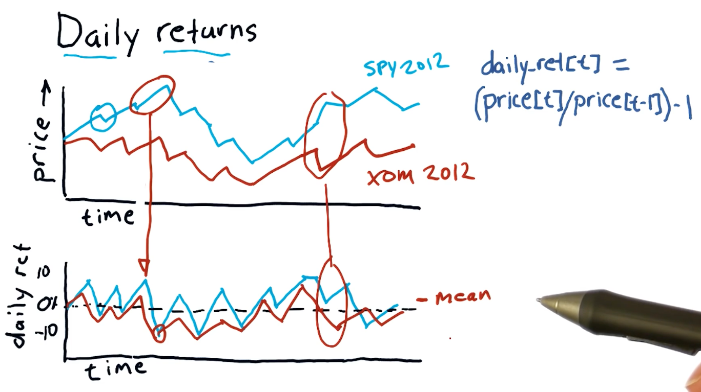

Welcome
This notebook contains my personal notes for CS7646: Machine Learning for Trading, offered at the Georgia Institute of Technology. A summary of the course follows:
This course introduces students to the real world challenges of implementing machine learning based trading strategies including the algorithmic steps from information gathering to market orders. The focus is on how to apply probabilistic machine learning approaches to trading decisions. We consider statistical approaches like linear regression, Q-Learning, KNN, and regression trees and how to apply them to actual stock trading situations.
Course links:
Part 1
The following section contains my notes for Part 1 of the course "CS 7646: Machine Learning for Trading". This section of the course covers the manipulation of financial data using Python.
1-1: Reading and plotting stock data
This lesson contains a basic introduction to the manipulation of data using
Python. Most of the data provided in this course comes in the format of .csv
files.
What does real stock data look like?
Usually, each .csv file containing stock data is named after its respective
stock symbol. We can expect the following headers in the stock's .csv file:
- Date
- Open
- High
- Low
- Close
- Volume
- Adjusted Close (Adj Close)
Each .csv file is sorted from newest to oldest record, based upon the Date
field.
The pandas dataframe
pandas is a Python library used to manipulate large sets of data. When
pandas ingests .csv, it stores the rows and columns in a certain format, or
dataframe, that allows us to easily access different sets of data
programmatically. Below is an example drawing from the class of the Pandas
dataframe, each plane of the dataframe is separated by the headers we listed
above: Close, Volume, Adj Close, etc.

Quizzes
Which fields would you expect to see in a .csv file of stock data?
- Number of employees
- Date / time
- Company name
- Price of the stock
- Company's hometown
1-2: Working with multiple stocks
This lesson covers more in-depth manipulation of stock data in .csv files with
pandas. In this lesson, we create empty dataframes with pandas and
selectively include data from a number of .csv files of different stock
symbols. This lesson provides examples of selecting stock information based upon
date ranges from various stock symbols, and provides guidance on how to avoid
ingesting invalid (NaN values) into the dataframe. An example provided by the
lesson can be found here.
Inner join vs outer join
An inner join of a table provides the common items between the two tables being joined. An example Venn-diagram of the operation is provided below:

An outer join of a table provides the common items between two tables, as well, however it also provides the left or right quantities of the two tables being joined. An example Venn-diagram of a left outer join and a right outer join are provided below:

The default method of join for a pandas dataframe is the left outer join.
Normalizing price data
The preferred method to normalize data within a pandas dataframe is to conduct
the following operation in Python:
my_dataframe = my_dataframe / mydataframe.ix[0, :]
Quizzes
How many days were U.S. stocks traded at NYSE in 2014?
- 365
- 260
- 252
1-3: The power of NumPy
NumPy's relationship to Pandas
pandas is essentially a wrapper for numpy ndarray objects. Below is a
screenshot from the lectures providing a conceptual overview of the objects'
relationships:

1-4: Statistical analysis of time series
Global statistics
We can easily compute global statistics like mean, median,
standard deviation, and more using pandas dataframes. A high-level
interpretation provided in the course lecture is provided below:

Rolling statistics
Rolling statistics are statistics observed during a time-slice of the global data. These rolling statistics allow us to derive trends from the global data. A high-level interpretation provided in the course lecture is provided below:

Bollinger bands
Bollinger bands are a trading concept where we maintain a rolling mean and define two bands that are separated two standard deviations from the rolling mean in both directions. Once a stock's value crosses below the lower threshold and then crosses above it, we can consider this a buy signal. Similarly, we can detect a sell signal when a stock crosses above the higher threshold and begins to dip below it. A high-level interpretation provided in the course lecture is provided below:

Daily returns
Daily returns can be easily calculated using the following equation:
daily_ret(t) = (price[t] / price[t-1]) - 1
Where t == date.
A high-level representation of daily returns from the course lecture is provided below:

Cumulative returns
Cumulative returns can be easily calculated using the following equation:
cumulative_ret(t) = (price[t] / price[0]) - 1
A high-level representation of cumulative returns from the course lecture is provided below:

Quizzes
Which statistic is best to use to determine buy / sell signals?
- rolling sum
- global mean
- global max
- rolling standard deviation
1-5: Incomplete data
While we might think financial data is well documented, sometimes financial data that we want to inspect can be missing from public archives. This lesson covers how we can mitigate the consequences of missing financial data.
Pristine data
Below is a screenshot from the lecture listing some of the issues with incomplete financial data:
Why data goes missing
From the lecture, some examples are given as to why stocks disappear or appear in the data / timeline. Some stocks get acquired by different companies, so companies completely go under and are no longer traded, and some stocks appear in the middle of the timeline because they are newer. A high-level representation from the lecture is provided below:

What can we do?
Pandas provides us with the ability to fill forward and fill backwards missing data between two points in time with the last known-good data point. It's best practice to fill forward first and then fill backwards. A high-level representation of this concept is from the lecture is provided below:
Pandas fillna()
Pandas provides us with a powerful function called fillna() that can be used
with dataframes to fill forward or fill backwards missing values.
1-6: Histograms and scatter plots
This lesson covers how to utilize histograms and scatter plots to analyze and compare daily returns of multiple stocks. This is a more useful technique than analyzing a stock by itself.
Daily returns
This section discusses what a histogram looks like and what information it captures. A high-level representation of a histogram in comparison with a stock price and daily returns graph can be found below:
Histogram of daily returns
In the below example, the lecture discusses the normal shape of a histogram which, like most things, is a bell curve. The lecture discusses the concept of kurtosis, describing fat tails and skinny tails - a measurement of the distribution of the histogram.
Fat tails mean that there are a large number of occurrences happening on the outer edges of the distribution, meanwhile skinny tails indicate the opposite. Below is a high-level representation of these concepts:

Scatterplots
This section discusses how scatterplots are generated to compare two stocks. As we can see, general trends begin to form when a scatterplot is generated for two stocks, allowing us to infer about the behavior or performance for a particular stock. Below is a high-level representation provided by the lecture:
Scatterplot slopes
In this section of the lecture, alpha and beta are described for a given scatterplot. alpha and beta are both functions of the slopes of the possible lines that can be drawn for a given scatterplot. Beta describes how reactive a particular stock is to the market. If the market goes up by %1, this stock would also achieve %1 - if the beta was equal to one. If the beta was equal to two, the stock would achieve %2 while the market achieved %1.
In a similar vein, we have alpha - the intersection between the line we've drawn using the scatterplot and the vertical axis. alpha describes how a stock performs on average better than market making stocks like the S&P500.
A high-level representation of these concepts is provided below:

Correlation
Correlation is a measurement of how close the dots on a scatterplot are to the line we've drawn through the scatterplot.
1-7: Sharpe ratio and other portfolio statistics
In this lesson we cover portfolio statistics used in the real world and how to calculate and interpret these statistics using Python.
Daily portfolio values
Given a starting investment amount, allocation percentages to respective stocks, and a window in time to conduct calculations, we can calculate the daily value of a portfolio over a given period of time.
Taking the prices dataframe, we can normalize the data and apply a series of
transforms to arrive at an array of values describing our portfolio's daily
value over a given period of time. Below is a high-level interpretation of how
to achieve this outcome given a dataframe:

Portfolio statistics
Using our new portfolio value array, we can calculate a series of important statistics, such as:
- cumulative return
- average daily return
- standard daily return
- sharpe ratio
A high-level interpretation from the lecture is provided below. This image also provides the equations to derive the statistics listed above:
Sharpe ratio
The sharpe ratio of a portfolio is a statistic that adjusts overall return for risk apparent in the portfolio. This is mostly useful when comparing two stocks or portfolio wherein one has a greater return but poses a greater risk - it allows us to make an informed decision about the riskier of the two stocks.
A high-level representation of these concepts from the lectures is provided below:
Computing sharpe ratio
To compute the sharpe ratio we need to divide the Expected Value of the
portfolio returns minus the risk free rate by the standard deviation of the
portfolio returns minus the risk free rate. The slide from the lectures, below,
provides possible references for the risk free rate, however, traditionally it's
been 0.
Sharpe ratio frequency
The sharpe ratio can be affected by the frequency in which sampling of the
portfolio occurs - it was originally intended to be an annual measure. In order
to acquire the annualized version of the sharpe ratio, you multiply the
sharpe ratio result by the constant k. This is calculated by taking the
square root of the frequency of sampling. The slide from the lecture provides
more insight into how the sharpe ratio is affected by frequency:

Quizzes
What is the sharpe ratio?
Below is a quiz from the class providing us with a scenario to calculate the sharp ratio with concrete values:
1-8: Optimizers
This lesson covers optimizers, algorithms that can do the following:
- Find the minimum values of functions
- Build parameterized models based on data
- Refine allocations to stocks in portfolios
To use an optimizer, we conduct the following steps:
- Provide a function to minimize
- Provide an initial guess of what the minimal outcome is
- Call the optimizer repeatedly until we reach the minimum
Minimization example
The following example for minimization is provided by the lecture. The minimizer in this example continues to test values for the given equation, tracking the minimum value until it reaches the lowest possible number. This algorithm rejects values that are high than it's most recent minimum, and continues to search for the lowest possible value with greater granularity as it completes iterations of the minimization algorithm.
Convex problems
When finding the minima of a given equation, we can run into an issue for complex equations or convex problems. In these problems, the minima can be difficult to find for a traditional minimizing algorithm due to the odd shape of the equation when graphed. It can have local minima, or portions of the line that plateau. Below is a slide from the lecture demonstrating this problem and how a minimization algorithm could solve it:
Building a parameterized model
Given a scatterplot like the one shown below from the lecture, a minimizer can determine the coefficients for a given equation by minimizing the distance of a graphed line (from the equation) to the dots on the scatterplot. This distance is known as error. The minimizer will attempt to minimize the amount of error, finding the appropriate coefficients.

1-9: How to optimize a portfolio
What is portfolio optimization?
Given a set of assets and a time period, find an allocation of funds to assets that maximizes performance.
What is performance?
We can choose from a number of statistics such as:
- Cumulative returns
- Volatility or risk
- Risk adjusted returns (Sharpe ratio)
Framing the problem
So how do we go about optimizing a portfolio? We use an optimizer to find the inverse Sharpe ratio for a given set of allocations in a portfolio. A high-level representation provided by the lecture is provided below:

Ranges and constraints
Ranges and constraints on the values of X provided to the optimizer for the
function to be minimized can help speed-up the rate at which the optimize can
solve the minimization of the function. Ranges in this case should be
limited from 0 to 1 as these represent percentages. Constraints in this
example specify that the sum(x) should equal 100 - meaning our allocations
reach 100% for an effectively optimized portfolio. Below is the slide from the
lecture discussing this topic:

Part 2
The following section contains my notes for Part 2 of the course "CS 7646: Machine Learning for Trading". This section of the course covers computational investing.
2-1
Part 3
The following section contains my notes for Part 3 of the course "CS 7646: Machine Learning for Trading". This section of the course covers various algorithms for trading.
3-1: How machine learning is used at a hedge fund
The ML problem
Plenty of hedge funds leverage machine learning models and just plain models to make predictions about the market using observation. And this essentially what a model does, machine learning or not. Provided some observation, a model produces some prediction.
In this course, we'll cover how we can process large amounts of data, provide it to a machine learning algorithm to produce a model, and use that model to make predictions from provided observations.
Choosing X and Y
Some examples provided by the course lecture to classify observations and predications are as follows:
- observations
- price momentum
- Bollinger value
- current price
- predictions
- future price
- future return

Supervised regression learning
What's the definition of supervised regression learning? Supervised means we provided an example observation and prediction. Regression means the model will be producing some numerical prediction. Learning means we train the model with some data. There are multiple algorithms to conduct supervised regression learning:
- Linear regression (parametric)
- Leverage data to create parameters and then discards the data
- K nearest neighbor (KNN) (instance based)
- Retains historic data and consults the data
- Decision trees
- Decision forests
Backtesting
Backtesting is a technique wherein we utilize historical data with our machine learning algorithm and subsequent model to make predictions on events that have already happened. Using the results of our forecasting, we can make determinations as to how accurate our model is and how confident we can be in its predictions. Below is a slide from the lectures on this:

3-2: Regression
This lesson covers more in-depth topics for supervised regression learning.
Parametric regression
Parametric regression leverages parameters in a given model to
predict the outcome given some observations. In the example provided below,
x is the observation of barometric pressure, the polynomial equation is the
model generated by some machine learning algorithm to predict how much it's
going to rain. The parameters in this case are the slope of the line, m,
and the constant b.

K nearest neighbor
We use the value k to select the nearest neighbor(s) for a historical data
point to make a prediction. The slides from the lecture, below, demonstrate how,
for a given query, we use this algorithm to select 3 of our nearest neighbors to
predict the amount of rain given historical data. We take the mean of the
nearest neighbors to generate our prediction.

Training and testing
This section of the lecture covers how we treat our data for training and testing. Our training data should be separate from our testing data. The training data should be used with some machine learning algorithm, parametric or KNN, to generate a model. Once the model is generated, we can then use the testing data to make predictions.